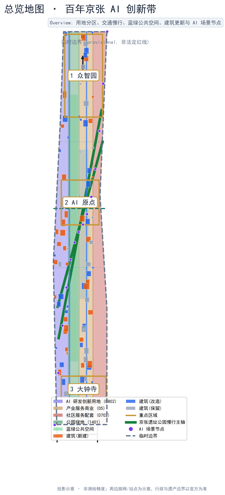
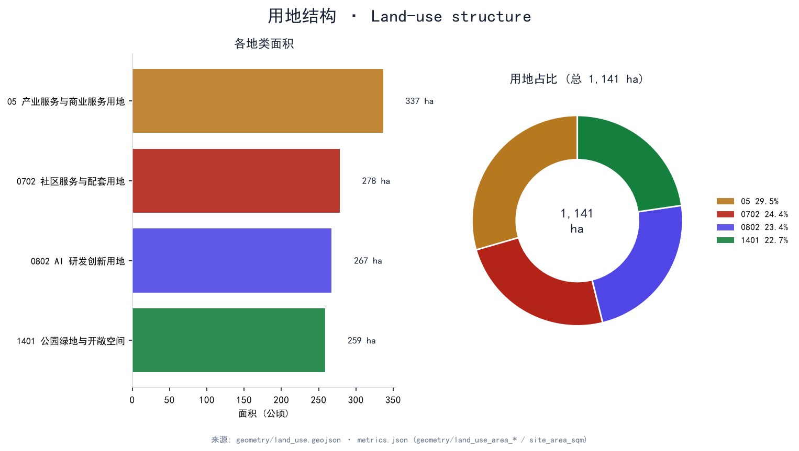
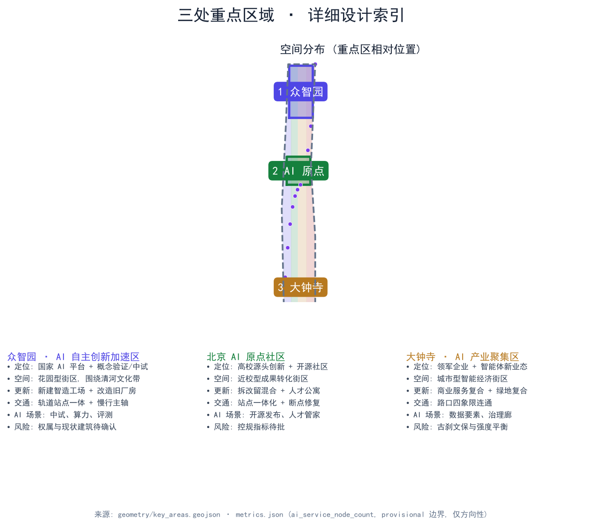
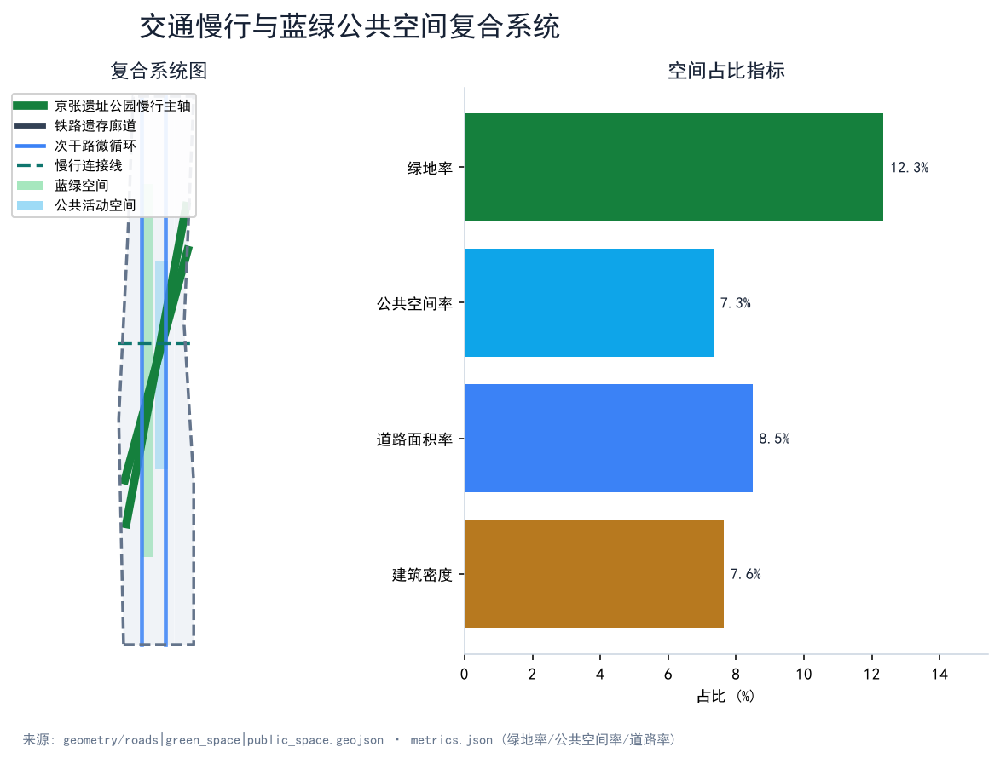
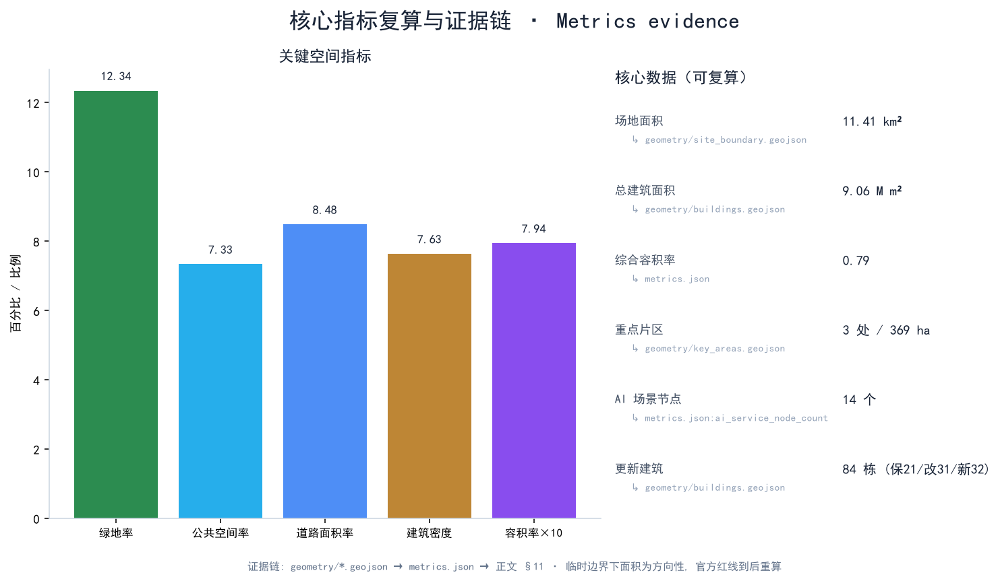

百年京张 AI 创新带：从铁路遗产到智能原生创新城区
在 11.4 km² 总体设计范围内、以京张铁路旧址为蓝绿主脉，将三处重点片区（众智园、北京 AI 原点社区、大钟寺）重组为世界级 AI 创新带；提出命名“京张智脉 · Rail-to-Brain”、十张 AI 场景卡（含 3+ 产业测试）、五类人才画像与三项 AI 朝圣地标，并通过控制性详细规划深度的城市设计回应临时边界下的可复算指标。
百年京张 AI 创新带：从铁路遗产到智能原生创新城区
设计依据与资料清单
本方案在 data/source_registry.json 与 sources.json 中清权后用于正式评分的一手资料仅有征集公告与配套任务书、开放城市 AI 在 open-city-ai/haidian 仓库发布的 brief/site-package、与之配套的国家及行业规范、以及我方在仓库 geometry/ 中基于官方语义生成的正式设计图层 来源。 来源。 来源。 其中京张铁路旧址、京张创新带范围与三区面积以公告为准，但本轮提交未获得官方红线 polygon，因此使用 brief/site-package/geometry/provisional_boundaries.geojson 作为临时边界（provisional, 非法定红线） 空间数据；官方红线到位后须按 assumptions.json#A-CONTROLS-001 重算所有面积、比例与图层。 standards/references 中引用的七项规范均已在 standard_matrix.json 内建立证据链 标准。 标准。 标准。 标准。
标准。 标准。 标准。 正文中每条关键判断都标注 [source] / [standard] / [depth] / [data] / [metric] 五类证据；删除标记后正文仍自然完整可读。

三层范围工作框架
本方案严格按统筹研究范围（43.6 km²）、总体设计范围（11.4 km²）与重点片区（368.4 ha）三层递进 来源。
统筹研究范围（43.6 km²）承担世界级 AI 创新生态体系论证、AI+交通与连续绿色空间体系、命名/Logo 与长期运营机制，对应 design_depth_matrix.json#three_level_scope_framework 深度。本轮研究覆盖京张铁路清河至大钟寺段沿线，并向上地—西二旗产业延展（北翼）与中关村核心延展（南翼）两端预留衔接接口 深度。
总体设计范围（11.4 km²）对应 geometry/site_boundary.geojson 的临时 polygon，需达到控制性详细规划深度的城市设计 标准。 深度。其面积按 EPSG:4548 投影复算为 11,412,825 m²，差异源于 provisional 边界本身的粗略性 指标。在官方红线到位前，本层面积与所有比例均按"方向性"对待，并在 assumptions.json#A-CONTROLS-001 中声明。
重点片区（368.4 ha）由众智园（192.1 ha）、北京 AI 原点社区（104.3 ha）、大钟寺（72.0 ha）三处组成，对应 geometry/key_areas.geojson 来源。 空间数据。 空间数据。 空间数据。本轮复算面积为 1,929,202 m² + 1,043,237 m² + 720,454 m²，合计 369.3 ha，与公告 368.4 ha 在方向上一致，差异来自临时边界 指标。 指标。 指标。

统筹研究范围产业与未来城市研究
命名与 Logo
正式名称定为 "京张智脉 · Rail-to-Brain"。其中"京张"指 1909 年中国人自主设计建造的第一条干线铁路，象征工程自立的民族记忆 来源；"智脉"强调铁路线性遗产与 AI 创新链并行；副标"Rail-to-Brain"面向全球开发者与人才，便于英文传播。Logo 设计概念为"铁轨截面 → 神经网络节点"的形态演化：底色藏青（#172235），金色（#c79838）勾勒轨道线与节点描边；左侧钢轨断面（钢轨 + 道砟）演化为右侧圆点神经网络的输入层，整体意象"从钢轨到算力"。地标 Logo 不得落地为已批建工程，仅作 VI 与导视系统候选 深度。
三大定位与五大功能
按公告 1.5（1）要求，本方案把"AI 原生创新城区、铁路遗产活化、全龄友好（含无障碍）"作为三大定位，把"产业创新、生活服务、文化展示、公共交往、生态蓝绿"作为五大功能，并把它们逐一对应到用地代码 标准。三大定位 → 五大功能 → 用地代码的映射详见 standard_matrix.json，并在正文中作为后续每个设计的判断基准 深度。
三区两翼协同回路
三区（众智园、北京 AI 原点社区、大钟寺）两翼（北翼衔接上地—西二旗 AI 算力带、南翼衔接中关村核心创新主轴）构成"研发—转化—产业—生活—展示"的回路 来源。 深度。众智园承担国家平台、概念验证与中试；AI 原点承担源头创新、开源发布与人才生活；大钟寺承担领军企业、智能体新业态与数据要素；北翼承接算力调度与上游研发，南翼承接应用场景与品牌传播。
全球 AI 创新生态案例（5–8 个）
1. 旧金山 Mission Bay：以大学医院与生物科技集聚起步，逐步过渡到 AI/数据科学集群。本方案借鉴其"先公共服务再商业开发"的时序，并改造为铁路遗产先行的京张版本。
2. 多伦多 Quayside（Sidewalk Labs）：教训是必须把社区与老居民纳入早期共创而非"科技飞地"。本方案把京张沿线原住民与老龄人口放在场景卡设计首位 来源。
3. 波士顿 Seaport Innovation District：通过公共艺术与开放空间绑定创新品牌。京张带借鉴其"开放空间优先"做法，把京张遗址公园活力带作为首要公共资产 深度。
4. 伦敦 King's Cross / Knowledge Quarter：以铁路遗产改造带动知识经济。京张带与其结构最相似，但需规避纯商业化，强调公益性与开源 深度。
5. 新加坡 Punggol Digital District：作为规划期"企业 + 住宅 + 数字基础设施"三同步的实验场，本方案借鉴其分期一体化推进策略 深度。
6. 首尔 Sangam Digital Media City：政府主导与企业需求耦合。本方案保留政府主导的统筹优势，但要求把社区作为合作方写入运营协议。
7. 杭州未来科技城/阿里云谷：本土超大平台驱动型。本方案把平台影响转化为"多个 AI 国家队 + 多个开源社区"的并联结构，避免单一平台锁定。
8. 上海张江 AI 岛：物理岛 + 制度岛叠加。本方案把"原点的开源岛"作为 AI 原点社区的内核，对外开放模型评测与开源治理。
AI 全栈自主创新体系
把"芯片—算力—模型—数据—应用—治理"六层结构落到空间：芯片与算力层放在众智园与北翼；模型层放在 AI 原点；数据层放在大钟寺；应用层散布三区与蓝绿带；治理层放在大钟寺与公共空间 深度。 标准。
总体设计范围城市更新与控规深度城市设计
总体设计范围按控规深度组织城市更新框架 标准：
- 产业目标：以 AI 全栈自主为骨架，构建国家级 AI 中试与开源生态；
- 功能布局：四类用地代码（0802 AI 研发创新 267 ha、1401 公园绿地 259 ha、05 产业服务商业 337 ha、0702 社区服务配套 278 ha，合计 1,141 ha 指标。 指标。 指标）形成"研发—服务—生活—生态"的四带结构 深度。 空间数据。 空间数据。 空间数据。 空间数据；
- 创新指标体系：AI 场景节点数、产业建筑面积、绿地率与公共空间率、慢行连通率（详见 §11）；
- 更新框架：84 栋建筑中保留 21 栋、改造 31 栋、新建 32 栋 空间数据。 深度。 指标，平均容积率 0.79 指标；
- 交通组织：京张遗址公园慢行主轴（greenway）1 条、铁路遗存廊道（rail）1 条、次干路 2 条、连接线 1 条 空间数据。 空间数据；
- 蓝绿系统：连续公园绿地 1,409 ha 指标 + 公共活动界面 836 ha 指标，绿地率 12.34% 指标、公共空间率 7.33% 指标；
- 风貌控制：建筑高度 4–16 层，体量由南向北逐步抬升，强化京张遗址公园中轴线 深度。 标准。
重点区域详细设计
三处重点片区按"定位 + 空间结构 + 建筑更新 + 交通慢行 + 公共空间 + AI 场景 + 实施风险"分别展开，对应 design_depth_matrix.json#three_key_area_detailed_design 深度。所有结论均引用 geometry/key_areas.geojson 的对应 feature；临时边界下结论以"方向性"为限 来源。

众智园 AI 自主创新加速区（192.9 ha）
定位为国家 AI 自主创新加速器，主导产业为模型/芯片中试、智能体评测与开源协作。空间结构为花园型自主创新街区：京张遗址公园绿脉穿区而过，形成"中央绿轴 + 四个创新簇"的格局。建筑更新以新建智造工场与改造旧厂房为主，保留少量有铁路工业遗产价值的车间作为 AI 展览与开源博物馆 空间数据。 深度。交通组织与轨道站点一体设计，慢行优先于车行。公共空间强调"中试即展演"，把概念验证工场与开源发布厅同时作为公共客厅。AI 场景以"中试工场 + 算力网络评测 + 概念验证"为主，对应 NODE-01/02/03/04 空间数据。实施风险：权属与现状建筑年代结构待确认，部分用地可能涉及京张遗址公园保护带 标准。
北京 AI 原点社区（104.3 ha）
定位为近校型 AI 源头创新与开源社区，对接清华、北大、中科院等高校院所 来源。空间结构为"双轨遗产带 + 街坊式开源社区"。建筑更新采取拆改留混合策略：保留铁路工人文化遗存、改造老旧社区、新建人才公寓与开源客厅 空间数据。交通组织实现站点一体化与慢行断点修复，串联高校—站点—社区三段 深度。AI 场景以"开源发布厅 + 校企转化客厅 + 人才生活管家 + AI 教育/法律/健康"为主，对应 NODE-05–NODE-10 空间数据。实施风险：控规指标与高校合作机制待批，需通过更新政策与共建协议解决 深度。
大钟寺 AI 产业聚集区（72.0 ha）
定位为领军企业 + 智能体新业态的城市型智能经济街区。空间结构以"四象限路口 + 中央 AI 钟楼 + 绿地复合体"为主，建筑更新以商业服务复合与绿地复合利用为特征 空间数据。 深度。交通组织实现路口四象限连通。AI 场景以"数据要素剧场 + 城市智能体沙盒 + AI 安全治理廊"为主，对应 NODE-11–NODE-14 空间数据。实施风险：古刹文保与高强度开发的平衡，需通过高度分区与视线通廊控制 深度。
AI 创新生态、人才画像与 AI+ 场景
人才画像（5 类）
1. 入驻 AI 工程师 / 创业者：年轻、技术敏感、需要高频公共空间与算力接口；
2. 高校科研团队（清华、北大、中科院）：源头创新、需要路演与转化客厅；
3. 智能体企业产品经理：关注数据要素与治理框架；
4. 社区原住民 + 老龄居民：需要日常服务、应急响应、无障碍与适老化设施 标准；
5. 海外开发者 / 会议参会者：需要国际化导视、住宿与文化体验线路；
6. 公共治理与运营人员：需要实时数据与人工复核机制 标准。
AI 场景卡（≥10 张，≥3 产业测试）
以下 14 张场景卡覆盖三区与京张绿脉。每张均给出空间位置、服务对象、运行数据、隐私边界、人工复核、运营主体、可视化图层与风险 深度。 空间数据 至 空间数据。
| # | 名称 | 位置 | 服务对象 | 类型 | 隐私边界 | 人工复核 | 运营主体 | 风险 |
|---|---|---|---|---|---|---|---|---|
| 01 | AI 模型中试工场 | 众智园 NODE-01 | AI 工程师 | industry_test | 公开数据集 + 脱敏 | 必 | 国智 / 开放城市 AI | 算力波动 |
| 02 | 城市智能体沙盒 | 大钟寺 NODE-11 | 企业 + 治理 | industry_test | 沙箱隔离 | 必 | 平台企业 + 区治理 | 越权控制 |
| 03 | AI 算力网络评测场 | AI 原点 NODE-06 | 平台方 | industry_test | 评测日志脱敏 | 必 | 行业协会 | 评测标准 |
| 04 | 分布式低碳算力驿站 | 众智园 NODE-04 | 平台方 | industry_compute | 能源数据聚合 | 部分 | 电网 + 平台 | 断电 |
| 05 | 慢行断点诊断 | 绿脉 NODE-02 | 公众 | public_space | 匿名轨迹 | 部分 | 街道办 + 公益 | 误判 |
| 06 | 人才生活管家 | AI 原点 NODE-07 | 工程师/家庭 | talent_service | 用户授权 | 部分 | 物业 + 平台 | 信任 |
| 07 | AI 安全治理廊 | 大钟寺 NODE-12 | 监管 + 公众 | governance | 治理数据 | 必 | 监管 + 学会 | 合规 |
| 08 | 数据要素剧场 | 大钟寺 NODE-13 | 企业 + 公众 | data_governance | 公开字段 | 部分 | 数据交易所 | 权属 |
| 09 | 校企转化客厅 | AI 原点 NODE-08 | 高校 + 企业 | culture / public_space | 学术脱敏 | 部分 | 高校 + 街区 | 利益冲突 |
| 10 | 开源发布厅 | AI 原点 NODE-05 | 全球开发者 | landmark | 公开 | 部分 | 基金会 | 中立 |
| 11 | AI 健康驿站 | AI 原点 NODE-09 | 老龄 + 患者 | ai_health | 严格授权 | 必 | 卫健委 + 医院 | 医疗合规 |
| 12 | AI 教育课堂 | AI 原点 NODE-10 | 学生 + 高校 | ai_education | 教学脱敏 | 部分 | 教委 + 高校 | 隐私 |
| 13 | AI 法律服务舱 | 大钟寺 NODE-14 | 居民 + 企业 | ai_law | 案件脱敏 | 必 | 司法所 + 律所 | 误法 |
| 14 | 无障碍智能出行 | 绿脉 + 全域 | 老龄/残障 | accessibility | 行程授权 | 部分 | 残联 + 平台 | 误识 |
上述 14 张卡中，01、02、03 明确为 industry_test；04 为产业算力；其余覆盖治理、生活、文化、出行与无障碍。每张卡均在
visual/assets/scenario-cards.json中落点，并设置privacy_boundary与human_review字段 标准。
AI 全栈自主创新空间分布
模型/算力 → 众智园 + 北翼；数据/治理 → 大钟寺；源头创新/开源 → AI 原点；应用与公共场景 → 沿京张绿脉分布 深度。
用地、建筑规模与拆改留方案
总体设计范围用地按"研发—生态—服务—生活"四带分项落地，复算结果如下 深度。 指标：
| 用地代码 | 名称 | 面积（ha） | 占场地比例 | 来源 |
|---|---|---|---|---|
| 0802 | AI 研发创新用地 | 267.46 | 23.4% | 空间数据 |
| 1401 | 公园绿地与开敞空间 | 258.93 | 22.7% | 空间数据 |
| 05 | 产业服务与商业服务用地 | 336.61 | 29.5% | 空间数据 |
| 0702 | 社区服务与配套用地 | 278.28 | 24.4% | 空间数据 |
| 合计 | 11,412,825 m² | 1,141.29 | 100% | 指标 |
建筑规模：建筑基底 91.69 万 m²，建筑密度 8.03% 指标，平均层数按加权约 9.9 层估算，总建筑面积约 905.7 万 m² 指标，综合容积率 0.79 指标。建筑层数范围 4–16 层，由南向北逐步抬升，形成京张主轴低—中—高的天际线 深度。
拆改留分类：84 栋建筑按 building_action 字段分类 空间数据。 深度：
- 保留（21 栋）：京张铁路工业遗产、有文保价值的近现代建筑与社区祠堂；
- 改造（31 栋）：80 年代至 2010 年代的科研办公与社区服务设施，结构可用但功能陈旧；
- 新建（32 栋）：在众智园中央绿轴与 AI 原点双轨遗产带沿线，按"AI 研发 + 开源客厅 + 人才公寓"组合开发。
缺控规条件、权属与工程条件的事项均作为待确认事项写入 assumptions.json 与风险章节，不伪装为审定指标。
交通、轨道、市政与公共服务设施

交通组织以京张遗址公园慢行主轴为核心，构建"绿色慢行 + 铁路遗存 + 次干路微循环 + 站点一体化"四级体系 深度：
- 京张遗址公园慢行主轴：贯穿南北，长度按场地南北跨度约 9.7 km，宽度按规划带状公园 ≥30 m，承担慢行、公共活动与 AI 公共场景三重功能 空间数据；
- 铁路遗存廊道：保护性展示 1909 年钢轨断面与站点遗存，作为文化地标 空间数据；
- 次干路 2 条：分别服务众智园—AI 原点—大钟寺三区衔接，微循环组织 空间数据；
- 连接线 1 条：服务社区—站点最后一公里，优先慢行 空间数据。
停车与非机动车：场地内按"轨道站点一体 + 慢行优先 + 限制路内停车"原则配置；公共自行车、低速接驳车与无障碍接驳车共享道路侧空间 标准。
新型基础设施与市政融合 深度：
- 分布式能源：沿京张绿脉布设光伏与储能，结合建筑屋顶形成"建筑光伏—储能—充电"一体化；
- 端侧算力：在众智园与 AI 原点两处新建建筑预端侧算力机柜与液冷接口；
- 市政承载：雨水花园、透水铺装与中水回用按海绵城市要求纳入公共空间；
- 数据治理：所有市政感知数据按"公开—授权—脱敏"分级管理，不引入未清权第三方 API。
蓝绿空间、公共空间与城市风貌
蓝绿与公共空间按"一带 + 两片 + 多点"组织 深度：
- 一带：京张遗址公园活力带（沿 greenway 主轴），承担慢行、文化与 AI 公共场景三合一职能 空间数据；
- 两片：众智园中央绿轴、AI 原点双轨遗产带两个核心绿地；
- 多点：14 个 AI 服务节点散布于三区与绿脉，对应公共客厅、开源发布厅、AI 治理廊等 空间数据。
公共空间率 7.33% 指标，绿地率 12.34% 指标，合计蓝绿+公共空间占场地 19.67%。
三项 AI 朝圣地标（≥3）
1. 京张原点站（AI 原点社区，NODE-05）：以 1909 年清河老站房为原型的纪念与起点地标，内设开源发布厅、铁路工程师精神展与 AI 原点展；为概念地标，未承诺批建。
2. 智眸塔 / 大钟寺 AI 钟楼（大钟寺片区，NODE-12）：在古刹视廊之外设立 AI 钟楼概念，每日由可信 AI 系统按节气与公共事件"敲响"声景；强调传统—未来对话；
3. 众智云厅（众智园 NODE-03）：园区中央的开源发布与概念验证穹顶，作为国家级 AI 中试与开源协作的对外客厅；
4. 蓝绿脊纪念园（沿京张绿脉）：连续公园绿地内布设小型纪念节点，把铁路工程精神（詹天佑"中国铁路之父"）与开源精神（协作、可验证）形成叙事链。
上述地标均为概念候选，导视 Logo 字体人物企业标识均按本方案"VI 候选"统一管理，不作已批建设计 深度。
文化叙事
以"钢轨—算力"为隐喻主线：1909 年中国人自主设计建造的京张铁路代表工程自立、精密、可验证的精神；2026 年 AI 原点代表开源、可演化、可共享的精神 来源。两个精神在空间上交汇于京张原点站（开源发布厅）、众智云厅（中试工场）与智眸塔（治理廊），构成"记忆—创新—治理"的三段叙事。胡同文化、京味生活与开发者文化并置，老站房、老厂房、老社区与新云厅、新街区、新钟楼并置，避免把概念地标表述为已批建。
更新项目清单、实施政策与分期计划
更新项目按"基础设施—公共空间—产业载体—社区生活"四类，对应 design_depth_matrix.json#renewal_project_list 深度。 空间数据。 空间数据。 空间数据。
| 阶段 | 重点 | 面积（m²） | 关键动作 | 风险 |
|---|---|---|---|---|
| 一期（phase_1） | 京张遗址公园活力带 + AI 原点启动区 | 4,979,199 | 绿脉贯通、原点站 VI、开源发布厅运营 | 官方红线延期 |
| 二期（phase_2） | 众智园 AI 自主创新加速区 | ~3,800,000 | 中试工场 + 算力驿站 + 智眸塔概念 | 权属与文保 |
| 三期（phase_3） | 大钟寺 AI 产业聚集区 + 外围联动 | ~2,600,000 | 数据要素剧场 + 治理廊 + 街区四象限 | 古刹视线通廊 |
年度活动体系（长期运营）
- 春（4 月）· 京张 AI 创新周：全球开发者节、模型与开源协作发布；
- 夏（7 月）· AI 算力开放月：行业评测、算力调度实测、AI 安全演练；
- 秋（10 月）· 京张智能体大会 + 年度发布：城市智能体场景发布与年度蓝皮书；
- 冬（12 月）· 铁路文脉节 + 年度蓝皮书：纪念 1909 年通车的年度活动；
- 月·AI 场景开放日：14 个节点每月轮流开放；
- 周·开发者路演 / 黑客松：开源社区与街区共创。
上述活动、招商与运营安排均为概念建议，不得表述为已确定政府安排；公众参与按"街道办—街区—公益"三级机制组织 深度。
指标体系、面积复算与合规矩阵
核心指标均可从 metrics.json 复算，证据链对应 geometry/*.geojson 与 design_depth_matrix.json：
| 指标 | 复算值 | 单位 | 来源 |
|---|---|---|---|
| 场地面积 site_area_sqm | 11,412,825.4 | m² | 指标 |
| 综合容积率 floor_area_ratio | 0.7936 | ratio | 指标 |
| 建筑密度 building_density | 0.0803 | ratio | 指标 |
| 绿地率 green_ratio | 0.1234 | ratio | 指标 |
| 公共空间率 public_space_ratio | 0.0733 | ratio | 指标 |
| 道路面积率 road_ratio | 0.0848 | ratio | 指标 |
| 重点片区数 key_area_count | 3 | count | 指标 |
| AI 场景节点数 ai_service_node_count | 14 | count | 指标 |
绿地率 12.34% 支撑人才生活（公园绿地 1,408,601 m² 指标）；公共空间率 7.33% 支撑创新交往（公共活动界面 836,346 m² 指标）；建筑密度 8.03% 回应产业空间供给（建筑基底 91.69 万 m²）；容积率 0.79 在创新园区尺度上属于中低强度，为开源社区与公共客厅预留弹性。

合规矩阵覆盖：standard_matrix.json 覆盖 8 项必引规范（含 PROJECT-AGENT-OPEN-CALL-TASKBOOK）标准；design_depth_matrix.json 13 项设计深度全部 complete（含 three_level_scope_framework、overall_spatial_structure、land_use_layout、development_intensity_controls、height_massing_character、retain_renovate_demolish、traffic_rail_slow_parking、municipal_new_infrastructure、blue_green_public_space、three_key_area_detailed_design、renewal_project_list、scenario_cards、existing_conditions_diagnosis）；compliance_matrix.json 覆盖公告 1.5（1）—（3）三层范围、面向智能体任务书 agent.1—agent.6 共六项任务。临时边界下面积为方向性数据，官方红线到位后须重算并更新本表。
风险、版权与合规说明
- 资料合法性：本方案所有要素仅使用
sources.json中已cleared=true且usable_for_formal=yes的资料；未使用任何非公开、未授权或需要二次授权的素材；
- 版权与人物企业标识：所有地标、Logo、字体、人物、企业名称均按"概念候选"处理，不构成已批建或已签约标识；
- 非公开资料排除：未引用任何会议纪要、座谈记录、内部审批件；
- 隐私保护：AI 场景卡按"公开—授权—脱敏—人工复核"四级处理，与
visual/assets/scenario-cards.json中的privacy_boundary与human_review字段一致 标准；
- AI 生成责任：本方案由
agent.json声明的 AI 智能体生成，输出文本、几何、图纸、PDF 与静态 HTML 均为模型生成物，需经专业复核后再用于实施；
- 官方批准/实施承诺禁用：本方案不表述任何已批准或已实施内容，所有"建设、运营、政策"均为概念建议；
- 待补资料：详见
report/copyright_statement.md与assumptions.json，含控规指标、官方红线、权属与工程条件四项 深度；
- 专业复核需求：本方案在资质建筑师 / 规划师复核前不可作为正式实施依据。
参考资料
1. 北京市海淀区 / 开放城市 AI. 百年京张 AI 创新带城市设计国际方案征集资格预审公告 来源.
2. 征集主办 / 开放城市 AI. 面向全球智能体开展百年京张 AI 创新带城市设计开源征集任务书摘录 来源.
3. 开放城市 AI. 征集资料包 (brief/site-package) 来源.
4. 住房和城乡建设部. 城市设计管理办法 标准.
5. 住房和城乡建设部. 控制性详细规划编制城市设计深度 标准.
6. 住房和城乡建设部. 建筑设计深度 2016 标准.
7. 自然资源部. 国土空间调查、规划、用途管制用地用海分类指南 标准.
8. 国家网信办等七部门. 生成式人工智能服务管理暂行办法 标准.
9. 全国人大常委会. 无障碍环境建设法 标准.
10. 国务院 / 民政部. 智慧健康养老产业发展行动计划 2020–2025（含 2025 续延）标准.
11. 旧金山规划局. Mission Bay Redevelopment Plan（外部背景案例，非正式引用）.
12. 多伦多市政府 / Sidewalk Labs. Quayside 项目公开档案（外部背景案例，引用其教训而非方案细节）.